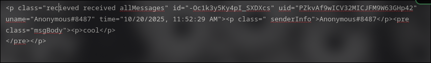
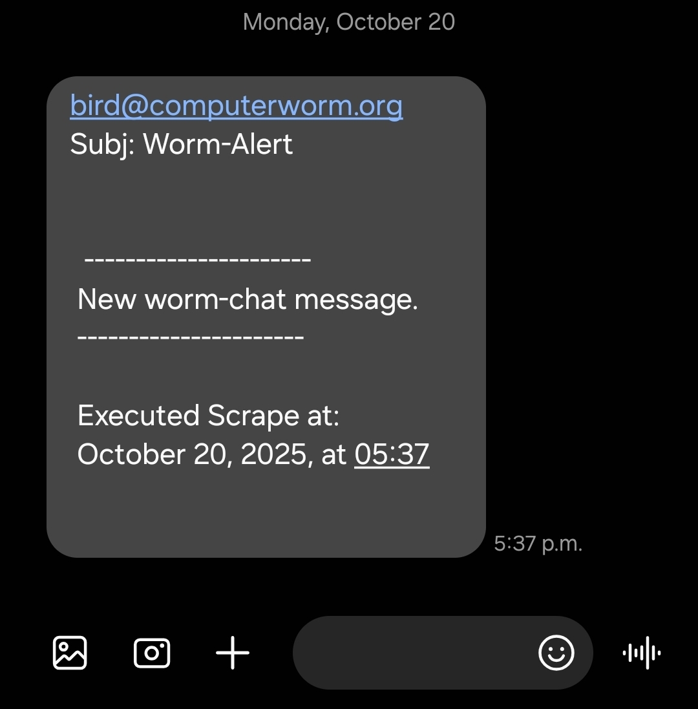

worm-chat room alert system
This is a script i made that webscrapes this websites worm chat page. Takes the last message and writes it to a text file.
next it compares the message to the last message written into the file. If they are different, it send me a text message through email [sms gateway] to let me know theres a new message
last message in text file:
text message sent to myself:
Right now i have the script run once a day at the same time my astro scrape happens. But I plan on making it an .exe file and porting it to windows 10 to have it run once every hour on my work pc.
The reason being is that when it runs it opens an instance of firefox using selenium webdriver, in order to get the last message. And this
is kind of annoying for when I'm in the middle of something.
For my work pc ill program a pop up with a timer that will give me the opprotunity to cancel the scrape for that hour if I'm busy, and then if no button is pressed on the pop up it will continue with the scrape. I probably will barely notice it anyways since I'm not on the computer too much. And even so the script takes like 3 seconds to execute so it's not that big of an inconvinience.